pacman::p_load(corrplot, ggstatsplot, tidyverse)Hands-on Exercise 5 Part 2 - Visual Correlation Analysis
Introduction
Correlation coefficient measures the type and strength of the relationship between two variables, ranging from -1 (perfect inverse relationship) to 1 (perfect positive relationship), with 0 indicating no linear relationship.
When working with multiple variables, these coefficients are arranged in a correlation matrix, which is used for three main purpose:
- exploring pairwise relationships between variables
- feeding into other analyses (like factor analysis or linear regression)
- diagnosing issues in other analyses
For large datasets, a corrgram is a visual tool that displays correlations by representing their sign and magnitude, while also reordering variables so that similar ones appear together for easier pattern recognition.
Getting Started
Installing of required packages
Importing data
For this exercise, the Wine Quality Data Set of UCI Machine Leatning Reposutory will be used. The data set consists of 13 variables and 6497 observations.
wine <- read.csv("data/wine_quality.csv")Building Correlation Matrix: pairs() method
There are more than one way to build scatterplot matrix with R, but the section will create one using pairs() function of R Graphics.
Basic correlation matrix
Figure below shows the scatter plot matrix of Wine quality Data in a 11 by 11 matrix.
pairs(wine[,1:11])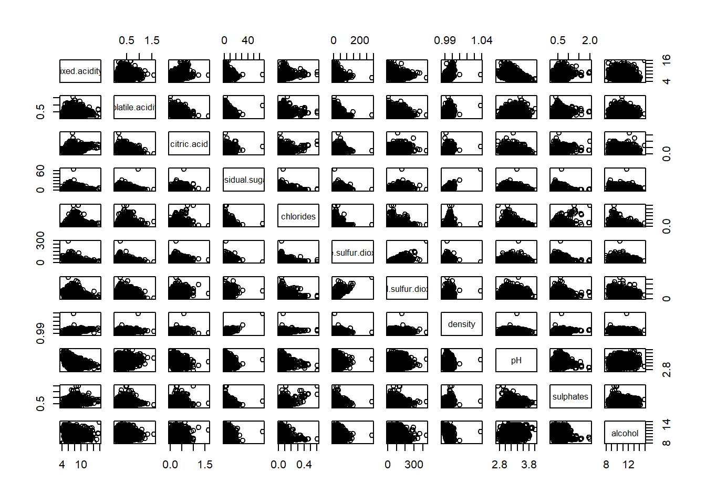
The required input of pairs() can be a matrix or data frame. The code chunk used to create the scatterplot matrix is relatively simple. It uses the default pairs function. The code chunk above uses column 1 to 11. The code chunk below uses column 12 to 12.
pairs(wine[,2:12])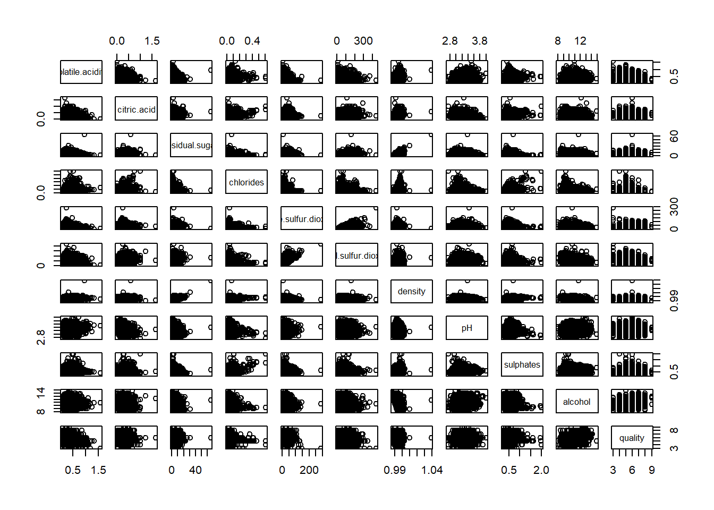
Drawing lower corner
pairs() function of R Graphics provided many customisation arguments. For exmaple, it is a common practice to show either the upper half or lower half of the correlation matrix instead of both. This is because a correlation matrix is symmetric.
To show the lower hald of the correlation matrix, the upper.panel argument will be used as shown in the code chunk below.
pairs(wine[,2:12], upper.panel = NULL)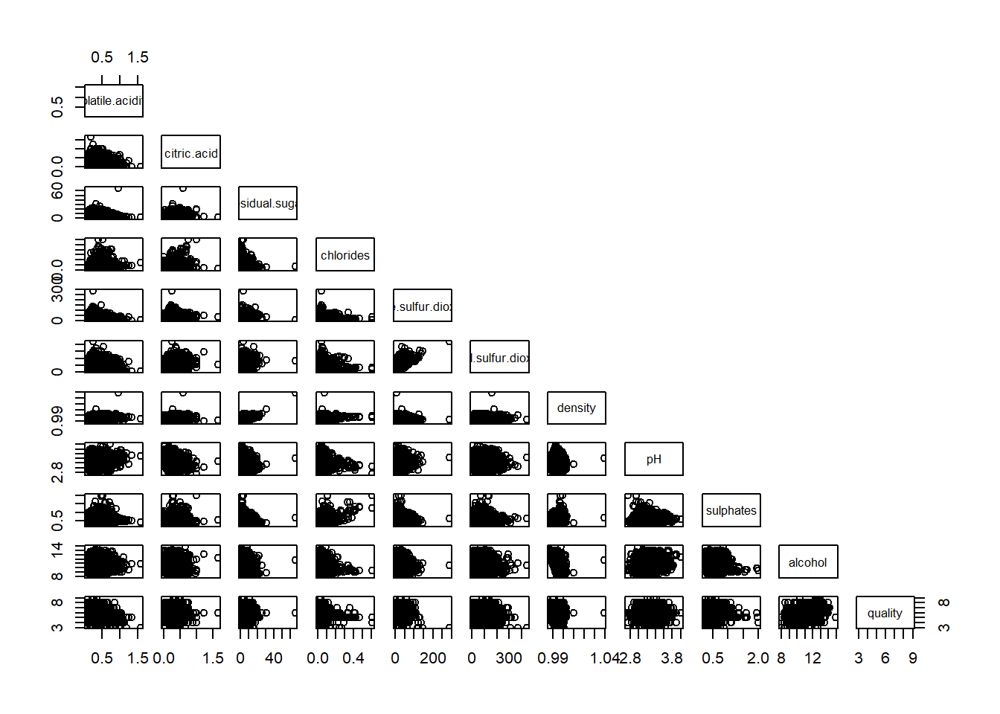
Similarly, you can display the upper half of the correlation matrix instead by using the code chunk below.
pairs(wine[,2:12], lower.panel = NULL)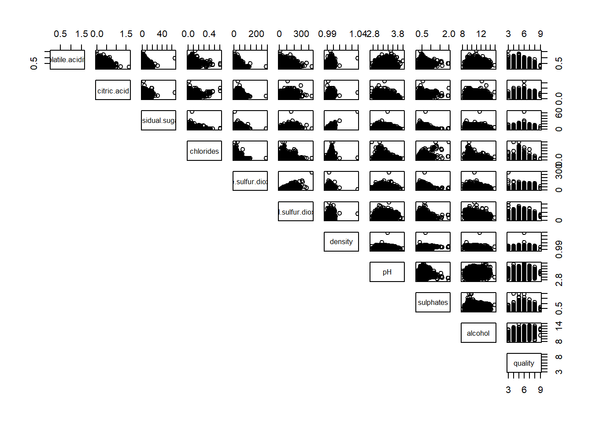
Including correlation coefficients
To show the correlation coefficient fo each pair of variables instead of scatter plot, panel.cor function will be used. This will also show higher correlations in a larger font.
panel.cor <- function(x, y, digits=2, prefix="", cex.cor, ...) {
usr <- par("usr")
on.exit(par(usr))
par(usr = c(0, 1, 0, 1))
r <- abs(cor(x, y, use="complete.obs"))
txt <- format(c(r, 0.123456789), digits=digits)[1]
txt <- paste(prefix, txt, sep="")
if(missing(cex.cor)) cex.cor <- 0.8/strwidth(txt)
text(0.5, 0.5, txt, cex = cex.cor * (1+r) / 2)
}
pairs(wine[,2:12], upper.panel = panel.cor)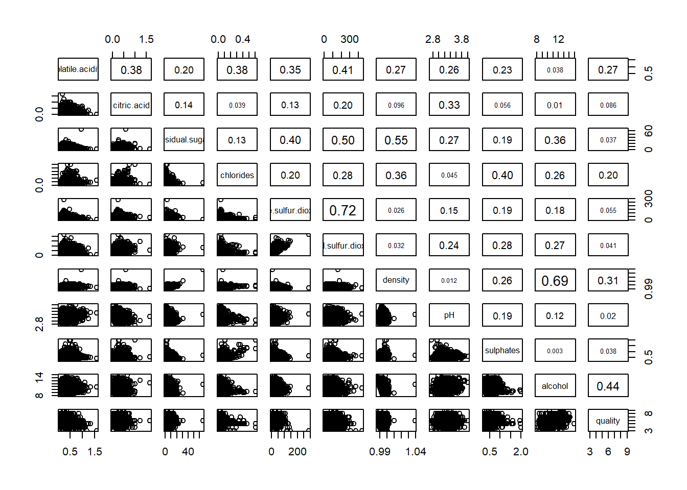
Visualising Correlation Matrix: ggcormat()
One of the major limitation of the correlation matrix is that the scatter plots a[[ear very cluttered when the number of observations is relatively large. To overcome this problem, Corrgram data visualisation technique suggested by D. J. Murdoch and E. D. Chow (1996) and Friendly, M (2002) and will be used.
There are at least 3 R packages provide function to plot corrgram, they are:
On top that, some R package like ggstatsplot package also provides functions for building corrgram.
Basic plot
One of the advantage of using ggcorrmat() over many other methods to visualise a correlation matrix is it’s ability o provide a comprehensive and yet professional statistical report as shown in the figure below.
ggstatsplot::ggcorrmat(
data = wine,
corr.vars = 1:11,
ggcorrplot.args = list(outline.color = "black",
hc.order = TRUE,
tl.cex = 10),
title = "Correlogram for wine dataset",
subtitle = "Four pairs are no significant at p < 0.05"
)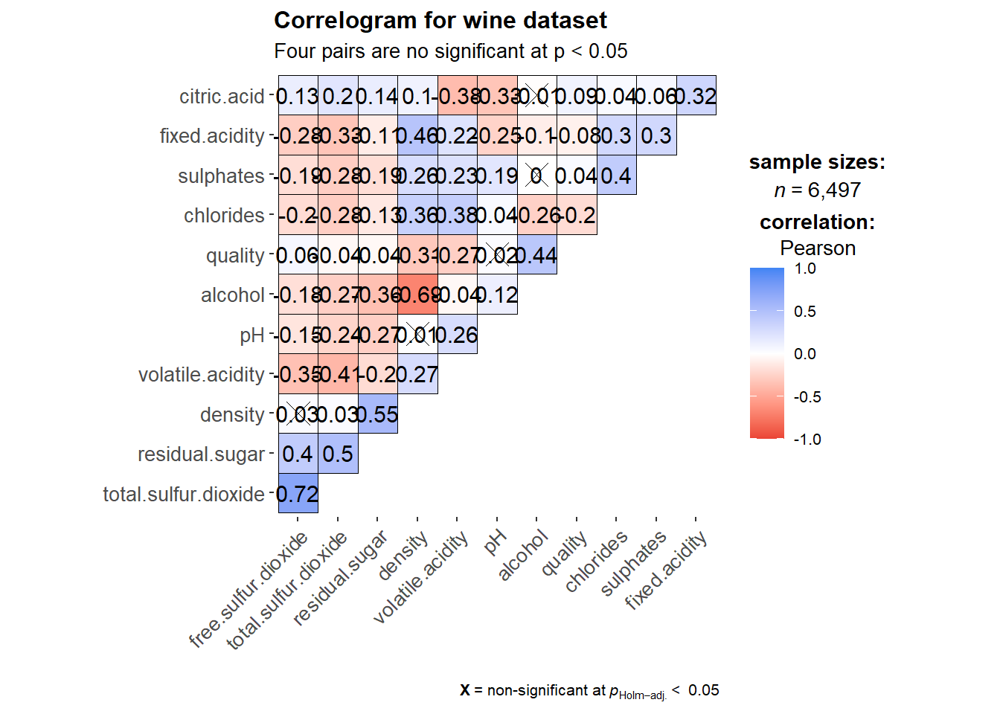
Tip
Things to learn from the code chunk above: - cor.vars argument is used to compute the correlation matrix needed to build the corrgram - ggcorrplot.args argument provide additional (mostly aesthetic) arguments that will be passed to ggcorrplot::ggcorrplot function. The list should avoid any of the following arguments since they are already internally being used: corr, method, p.mat, sig.level, ggtheme, colors, lab, pch, legend.title, digits
The sample sub-code chunk can be used to control specific components of the plot such as the font size of the x-axis, y-axis, and the statistical report.
ggplot.component = list(
theme(text=element_text(size=5),
axis.text.x = element_text(size = 8),
axis.text.y = element_text(size = 8)))Building Multiple Plots
Since ggstatsplot is am extension of ggplot, it also supports faceting, However the feature is not available in ggcormat() but in the grouped_ggcorrmat() of ggstatsplot.
grouped_ggcorrmat(
data = wine,
cor.vars = 1:11,
grouping.var = type,
type = "robust",
p.adjust.method = "holm",
plotgrid.args = list(ncol = 2),
ggcorrplot.args = list(outline.color = "black",
hc.order = TRUE,
tl.cex = 10),
annotation.args = list(
tag_levels = "a",
title = "Correlogram for wine dataset",
subtitle = "The measures are: alcohol, sulphates, fixed acidity, citric acid, chlorides, residual sugar, density, free sulfur dioxide and volatile acidity",
caption = "Dataset: UCI Machine Learning Repository"
)
)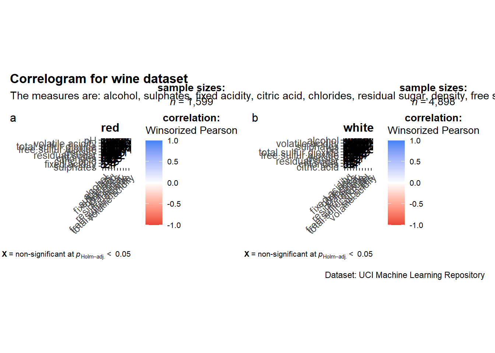
Tip
Things to learn from the code chunk above:
- To build a facet plot, the only argumnt needed is
grouping.var - Behing group_ggcorrmat(), patchwork package is used to create the multiplot.
plotgrid.argsargument provides a list of additional arguments passed to patchwork::wrap_plots, except for guides argument which is already separately specified earlier annotation.argsargument is calling plot annotation arguments of patchwork package
Visualising Correlation Matrix: corrplot package
This is the introduction to corrplot package which will give basic understanding of the package.
Getting started with corrplot
We need to comput the correlatin matrix of wine data frame first.
wine.cor <- cor(wine[, 1:11])Next, corrplot() is used to plot the corrgram by using all the default setting as shown in the code chunk below.
corrplot(wine.cor)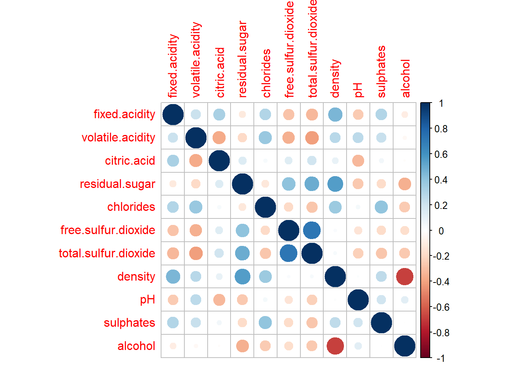
Notice that the default visual object used to plot the corrgram is circle. The default layout of the corrgram is a symmetric matrix. The default colour scheme is diverging blue-red. Bkue colors are used to represent pair variables with positive correlation coefficients and red colors are used to represent pair variables with negative correlation coefficients. The intensity of the color or also known as saturation is used to represent the strength of the correlation coefficient. Darker colors indicate relatively stronger linear relationship between the paired variables. On the other hand, lighter colors indicate relatively weaker linear relationship.
Working with visual geometrics
In corrplot package, there are seven visual geometric (parameter method) can be used to encode the attribute values. They are: circle, square, ellipse, number, shade, color and pie. The default is circle. As shown in the previous section, the default visual geometric of corrplot matrix is circle. However, this default setting can be changed by using the method argument as shown in the code chunk below.
corrplot(wine.cor,
method = "ellipse")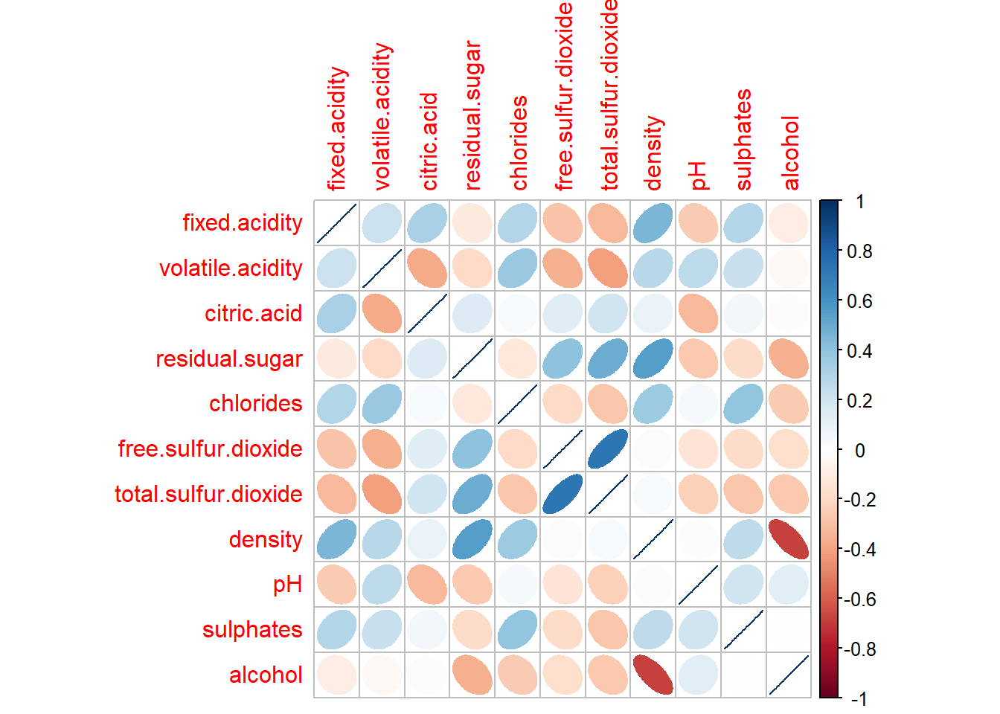
Working with layout
corrplor() supports three layout types: “full”, “upper” or “lower”. The default is “full” which display full matrix. The default setting can be changed by using the type argument of corrplot().
corrplot(wine.cor,
method = "ellipse",
type="lower")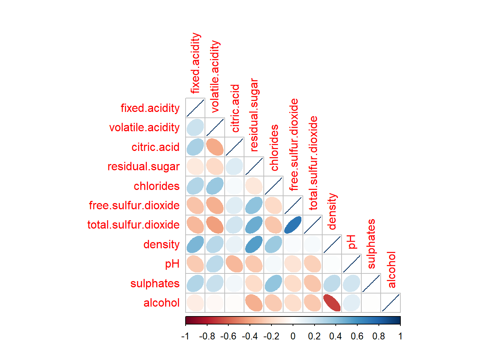
The default layout of the corrgram can be further customised. For example, arguments diag and tl.col are used to turn off the diagonal cells and to change the axis text label color to black color respectively as shown in the code chunk and figure below.
corrplot(wine.cor,
method = "ellipse",
type="lower",
diag = FALSE,
tl.col = "black")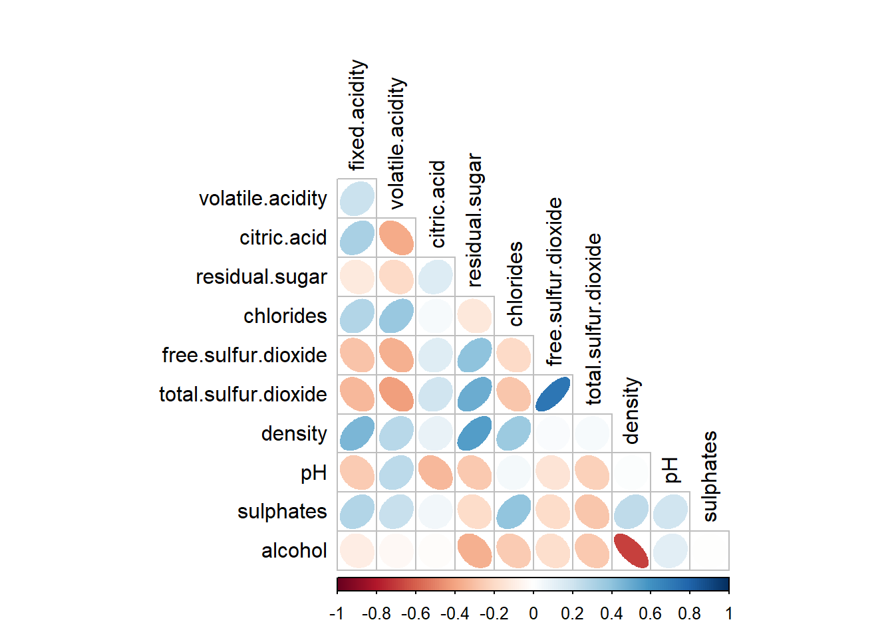
Tip
Other layout arguments that can be experimented on: tl.pos, tl.cex, tl.offset, cl.pos, cl.cex and cl.offset
Working with mixed layout
With corrplot package, it is possible to design corrgram with mixed visual matrix of one half and numerical matrix on the other half. In order to create a coorgram with mized layout, the corrplot.mixed(), a wrapped function for mixed visualisation style will be used.
corrplot.mixed(wine.cor,
lower = "ellipse",
upper = "number",
tl.pos = "lt",
diag = "l",
tl.col = "black")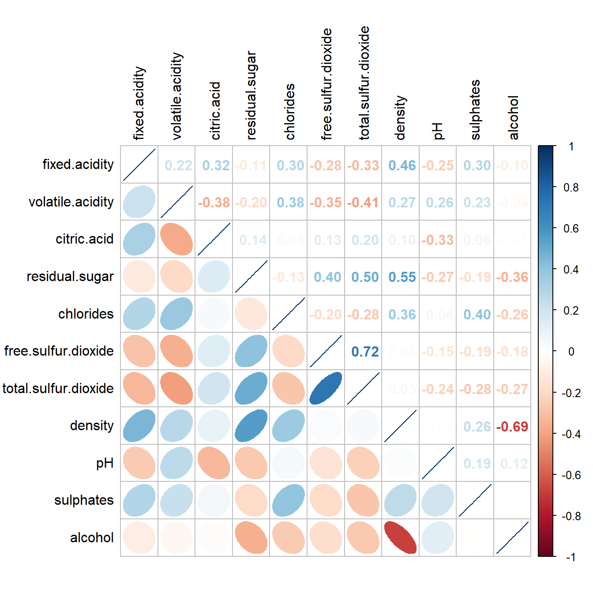
Note
Notice that argument lower and upper are used to define the visualisation method used. In this case, ellipse is used to map the lower half of the corrgram and numerical matrix (i,e, number) is used to map the upper hald of the corrgram. The argument tl.pos, on the other hand, is used to specify the placement of the axis label. Lastly, the diag argument is used to specify the glyph on the principal diagonal of the corrgram.
Combinign corrgram with significant test.
In the statistical analysis, we are also interested to know which pair of variables their correlation coefficients are statistically significant.
With corrplot package, we can use the cor.mtest() to compute the p-values and confidence interval for eac pair of variables.
wine.sig = cor.mtest(wine.cor, conf.level= .95)We can then use the p.mat argument of corrplot function as shown in the code chunk below.
corrplot(wine.cor,
method = "number",
type = "lower",
diag = FALSE,
tl.col = "black",
tl.srt = 45,
p.mat = wine.sig$p,
sig.level = .05)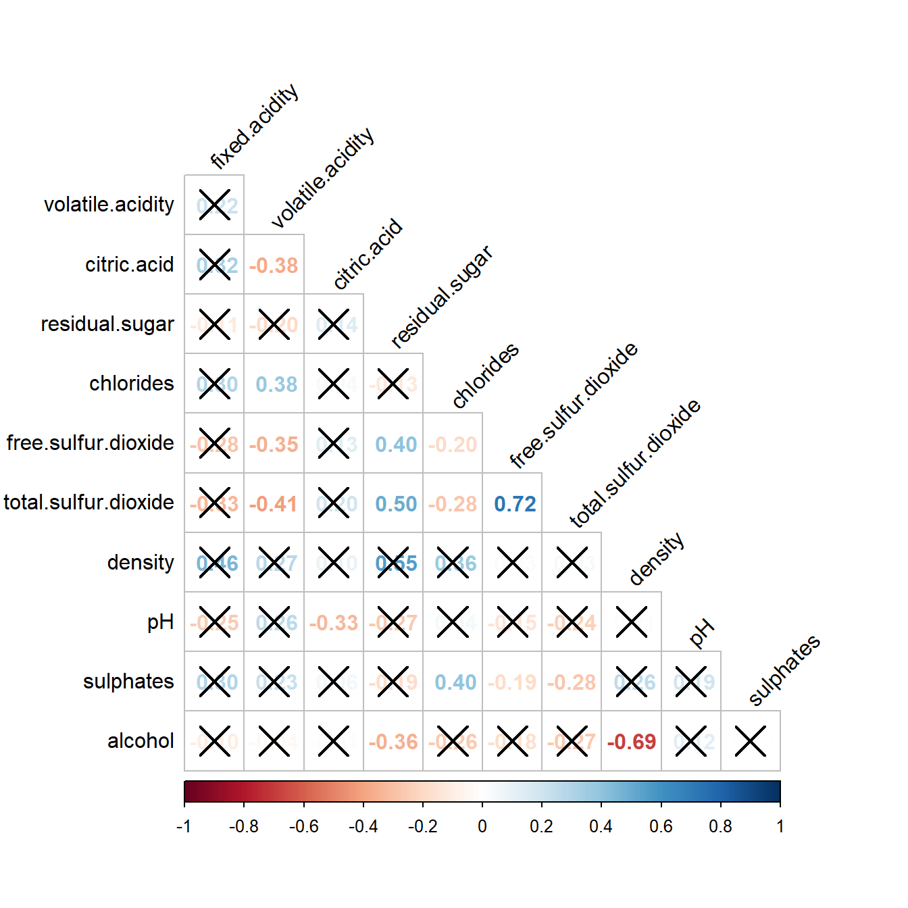
As you can see, the corrgram reveals that not all correlation pairs are statically significant. For example the correlation between total sulfur dioxide and free sulfur dioxide is statistically significant at significant level of 0.1 but the not the pair between total sulfur dioxide and citric acid.
Reorder a corrgram
Matrix reorder is very important for mining the hiden structure and pattern in corrgram. By default, the order of attributes of a corrgram is sorted according to the correlation matrix (i.e. “original”). The default setting can be over-write by using argument of corrplot(). Currently, corrplot package support four sorting methods, they are:
- “AOE”: for angular order of the eigenvector
- “FPC”:for the first principal component order
- “hclust”: for hierarchical clustering order, and “hclust.method” for the agglomeration method to be used
- “hclust.method” should be one of “ward”, “single”, “complete”, “average”, mcquitty”, “median” or “centroid”
- “alphabet” for alphabetical order
corrplot.mixed(wine.cor,
lower = "ellipse",
upper = "number",
tl.pos = "lt",
diag = "l",
order="AOE",
tl.col = "black")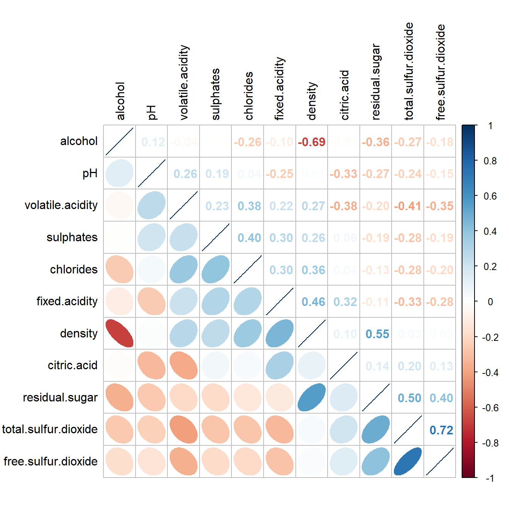
If using “hclust”, corrplot() can draw rectangle around the corrgram based on the results of hierarchical clustering.
corrplot(wine.cor,
method = "ellipse",
tl.pos = "lt",
tl.col = "black",
order="hclust",
hclust.method = "ward.D",
addrect = 3)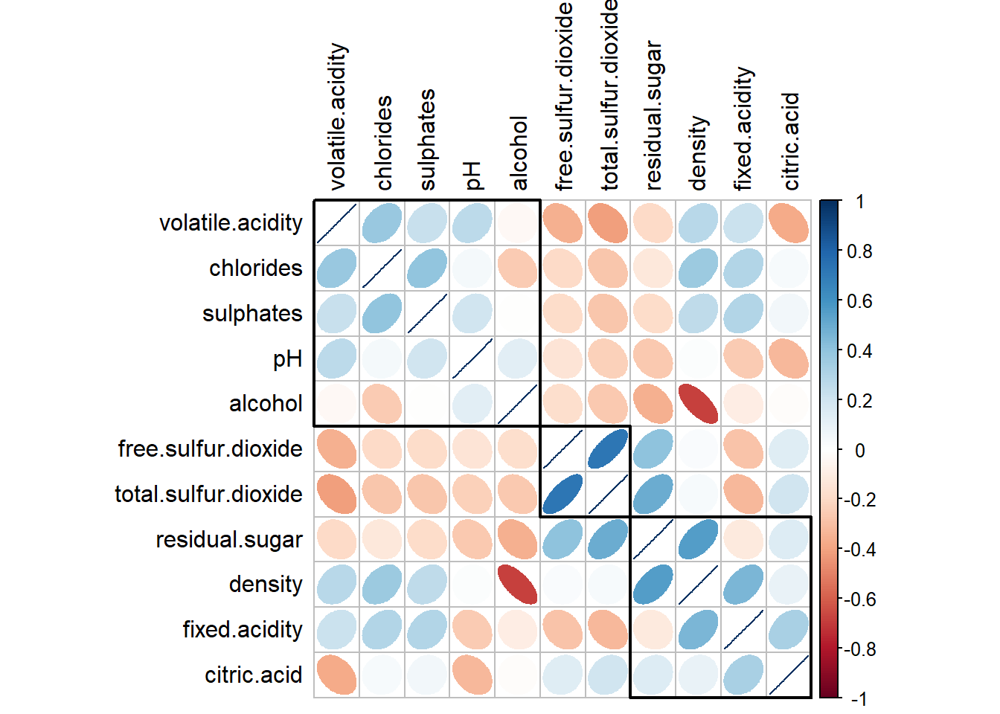